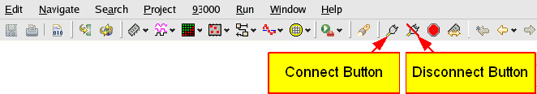

Connect and disconnect buttons
The connect and disconnect buttons are part of the short cut bar of the SmarTest Eclipse window. The connect and disconnect buttons appear in all predefined perspectives.

The connect and disconnect buttons are useful when you debug test programs.
When you click the connect button, the test system performs the following sequence:
- Connects AC relays to DUT inputs, DUT outputs and bidirectional pins
- Powers up the supplies to the DUT
- Sets sequencer to break/on state
When you click the disconnect button, the sequence is executed in reverse order.
Note If user defined connect/disconnect sequences are available, SmarTest will execute
the user defined sequences when pushing the buttons. If the user defined connect/disconnect
sequences are not specified, the standard connect/disconnect sequence will be used.
Note The messages "USER-DEFINED CONNECT SEQUENCE ENABLED!" or "USER-DEFINED DISCONNECT
SEQUENCE ENABLED!" will be shown in the UI report window once if user defined connect/disconnect
sequences are available.